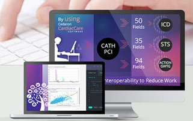

Cedaron Training and Services
Get The Most Out of Your Software!

CardiacCare:
CHECK YOUR SERVICE & TRAINING OPTIONS
- Full or partial remote or in-person training sessions.
- Train-the-trainer sessions for program administrators.
- Registry yearly reporting process review.
- Part-time or Full-time data abstractor services.
- Program customization beyond the existing program flexibility.
- Yearly rollover service.

EHR Software Solutions & Connect:
CHECK YOUR SERVICE & TRAINING OPTIONS
- Webinars and in-person training available.
- Owner, Manager, or Staff training.
- Training specific to your Therapy requirements.
- Speech-Language Pathology training.
- Data Conversion service
- Customize reporting service